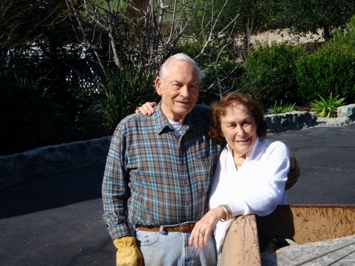
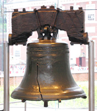

253 B Granada Drive
San Luis Obispo, Ca 93401
Tuesday Through Friday 11 AM — 3 PM
(805)541-8775
(805)541-8776
For general information, please email us at ljc@crawford-ent.com
February 2017....still cold outside on the California Central Coast ....more rain expected.... and still a good time to come in and let us help you with your stamp or coin collections! Come and see us.
We, Allan and Lois Crawford, are proprietors of California Coin and Stamp, located in San Luis Obispo, CA. since 1992. Our business originated in Oakland, CA in 1977 with the specific goal, then and now, of serving collectors....both the beginner and the serious collector.....both buyer and seller. It was to be also a place where gold, silver and platinum bullion could be bought and sold based on accurate industry pricing. We planned it to be a store where nice, problem free, professionally graded and fairly priced coins and stamps and currency would be available, along with assorted supplies related to the hobbies. And of course the customer would be waited upon by a friendly staff....usually the two of us! Since then we have helped many....young and old.. develop always good looking and sometimes valuable collections depending on how much has been invested. Educating our customers is always a priority with us....helping them to collect wisely... In addition we take very seriously the responsibility to help them to understand why adding gold or silver or both to their portfolios is a wise step especially now in what appears to be an uncertain economical situation facing our country. What else....oh yes, coins and currency can be submitted to NGC or ANACS for professional grading or authentication through our store. Now....to end this introduction here is a little bit about the key player in the business... speaking now of Allan Crawford.... Allan graduated with an Industrial Engineering degree from U C Berkeley in 1952 after serving in the Navy until the end of WW II. He is a lifetime collector of both coins and stamps....a Life member of the American Numismatic Association, # 981....he is trained in grading coins of all types through ANA seminars as well as a lifetime of experience....he is as well a member of the American Philatelic Society. He spends as much time as is needed when working with a client, explaining and demonstrating the way a coin or stamp is graded, why it is priced as it is. And whether buying and selling, you will be talking to an expert who would also like it to be known that he was an active Rotarian for fifty years. So finally when you walk through our door you will be greeted as a friend which indeed is how we see you!!!
"We took in some jewelry to sell, and fell in love with this little shop. It's sort of like stepping back to a kinder, gentler time (to borrow a phrase). There is a great old guy who owns the shop - Mr. Crawford (no relation ;). When you walk through the door, even if he is with other customers, he will say, "Hello folks, be right with you!" You hardly ever see such gracious friendliness anymore. But it's right here in this little shop, and there's also a lot of neat coins and stamps to look at. Pay them a visit sometime! :)"
"Called and got a message saying that he's open Tuesday - Saturday and that they might be there on Monday afternoon so we showed up about 1:30 on Monday and he was open. A great COMPLETE selection of US and World coins fairly priced. The staff was most pleasant and dug out items from the back which were of interest. I wish that they were open past 4:00 today as I would have liked to have seen more. I will be back on another trip. Forget the other so-called coin/stamp shop in SLO and go to this SERIOUS store. FIVE stars all the way!"
"Came in with thirty dollars, not sure what I wanted. The couple that owns the shop helped me leave very satisfied! There is a wide selection at varying prices, some only a couple of dollars. Pros: Coins, Numismatics, Service, Atmosphere"
"Easy to work with, nice, and very helpful."
"I took in some silver and birth year coin sets to sell, the gentleman running the shop was very kind. Great experience!"
“Products are paid for with products.” In other words, production is the source of demand. Demand comes from output, not from printing money. If you could boost real demand simply by printing money, we’d all be rich already.
Had you acquired a 100 ounce bar of physical gold on December 31, 1999, your total out-lay would have been $29,025.00. The value of that same gold bar today would be approximately $132,800.00. That could easily pay off a mortgage, provide for a child’s college education, or buy a great many other items that would change the lives of most people reading these words. More than a 4-fold rise in the value of any asset over the course of seventeen years would be considered a winner. You will never hear anything like this on mainstream media...
We are in a paper bubble. A massive paper bubble. Stock prices are not just at historic highs — they’re at valuations that have been seen only a few times in history, and each time served as preamble to a monumental meltdown. Bond prices are in the mother of all bubbles because of überlow interest rates that have persisted for nearly a decade now. The U.S. dollar — a paper asset in that it’s backed by nothing more substantial than the petty whims of politicians — is in a bubble that has seen it rise to a 14-year high
We should be thankful the dollar has continued to maintain value, especially given the decades of monetary policies that continue to challenge its position as a monetary standard for the world.
